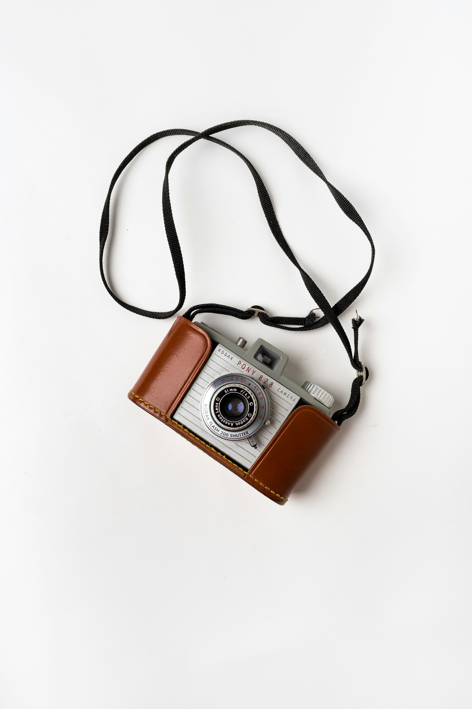

The Revival of Film Photography: Why Analog is Making a Comeback
In an era where almost everyone has a powerful digital camera in their pocket, it might seem surprising that film photography is experiencing a revival. But for many, the tactile experience and unique aesthetic of film are irreplaceable. What's behind this resurgence, and why are so many photographers - both amateur and professional - embracing the world of analog once again?
1. The Hands-On Experience of Film Photography
In a world where everything feels digital and instant, film photography offers something refreshingly slow and deliberate. Each shot matters because you're limited to the number of exposures on your roll of film. Unlike digital cameras, where it's easy to take dozens of pictures and delete most of them, film forces you to think about composition, lighting, and timing.
The process itself is physical and hands-on: loading the film, winding it after every shot, and finally, waiting for the film to be developed. There's a certain excitement and anticipation in this waiting period that digital simply can't replicate.
2. Aesthetic Appeal: Film vs. Digital
One of the biggest reasons people are drawn to film is the unmistakable aesthetic it offers. Film has a unique grain, dynamic range, and color depth that's difficult to mimic with digital filters. Some prefer the warm tones of Kodak Portra, while others are drawn to the punchy colors of Fujifilm. Every type of film stock has its personality, and photographers often select one that matches the mood or message they're trying to convey.
In digital photography, there's often a quest for perfection: flawless resolution, no grain, and perfectly sharp images. Film, on the other hand, embraces imperfection. Light leaks, grain, and slight blurriness can enhance the mood of a photo, making it feel more authentic and emotional.
3. The Slow Art of Patience
Digital photography offers instant gratification. You take a shot, look at the screen, and immediately know if it's good or not. Film photography, in contrast, teaches patience. Once you've shot your roll of film, you must wait for the development process. For many, this delayed gratification is one of film's greatest charms. When you finally see your photos, there's a magic in realizing that every shot you took was intentional and crafted with care.
This slow approach to photography also encourages mindfulness. Without the ability to endlessly reshoot, you become more present in the moment, paying attention to every detail before pressing the shutter.
4. Nostalgia and Authenticity
For some, shooting film is about connecting with the past. There's a certain romance tied to the history of photography. Iconic photographers like Ansel Adams, Vivian Maier, and Henri Cartier-Bresson used film to capture the world. By using the same medium, many modern photographers feel like they're honoring that legacy.
Photo by Andrew Draper on Unsplash
Additionally, film photography often feels more “real” to some people. In a time where digital manipulation is rampant, the raw, unfiltered nature of film can feel more authentic. What you see is what you get - no Photoshop, no filters, just the image as it was captured.
5. A Rebellion Against Digital Overload
We live in an age of digital saturation. Our smartphones constantly bombard us with photos, videos, and notifications. For many, film photography is a way to disconnect from this digital overload. It's a rebellion against the rapid consumption of imagery, encouraging a slower, more intentional form of creativity.
In a world of infinite storage and endless streams of content, the limitations of film - only 24 or 36 exposures on a roll, the cost of development, the time investment - can actually feel freeing. It brings back the importance of quality over quantity.
6. Film Photography as a Craft
Unlike digital photography, where technology does much of the heavy lifting, film photography requires skill and knowledge. From selecting the right film stock to mastering exposure settings without the luxury of a preview screen, film photographers must be more technically aware.
Many also learn to develop film at home, further adding to the sense of craftsmanship. The darkroom process - watching your images come to life in a chemical bath - can be deeply rewarding, turning photography into a full, hands-on artistic experience.
7. Film is Here to Stay
Though digital cameras have taken over much of the photography world, film is far from obsolete. In fact, it's thriving. From Instagram influencers to professional photographers, more and more creatives are turning to analog to achieve a look and feel that digital simply can't offer.
Film photography isn't just about nostalgia; it's about embracing a different way of seeing and creating. It's a slower, more intentional process that values each shot and embraces the imperfections that make photography an art form. Whether you're a seasoned photographer or just curious, there's never been a better time to dive into the world of film.
So, dust off that old camera, pick up a roll of film, and experience the magic of analog photography for yourself.